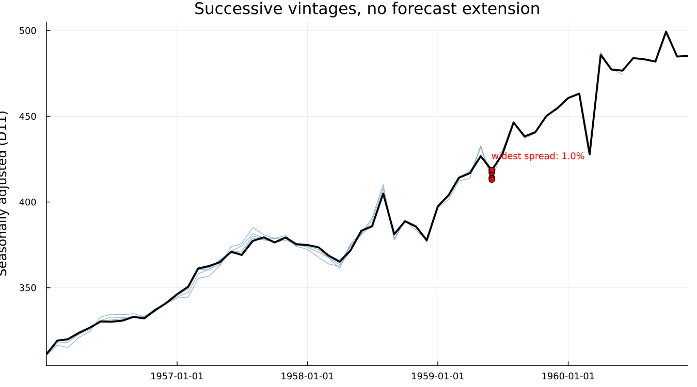
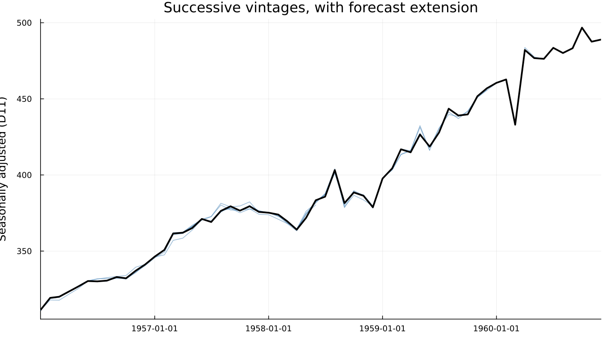

9. The End-of-Series Problem
9.1 The months that matter most
A statistical office publishes an adjusted figure for last month. Next month, without any error and without any change in policy, that figure changes. This is not a bug, nor is it sloppiness. It is a direct, structural consequence of how X-11's filters work, and it is the single best argument for everything that follows in this book.
The months a reader cares about most — the most recent ones — are exactly the months X-11 estimates worst.
9.2 Why the ends are different
Chapter 5 introduced the Henderson filter as a symmetric, centred moving average: to estimate the trend at month t, it uses observations from both before and after t. That works everywhere except at the two ends of the series, where the "after" observations do not yet exist.
X-11's answer is the asymmetric end filters shown in Figure B-8 — the same Henderson criterion, applied with only the data actually available. They are a reasonable substitute, not a flawed approximation of the symmetric filter; no version of the symmetric filter could be applied at the series end, since it needs data that does not exist.
9.3 Watching a series get revised
The consequence of an asymmetric filter is that the estimate at month t depends on how much of the future was available when it was computed. As more months arrive, the estimate for t is recomputed with a filter that draws closer to symmetric, and it moves.
Figure C-1 makes this concrete. It runs the airline series (dataset("airline")) through seven successive vintages — truncated at six-month intervals from 1957-12 through the full sample at 1960-12 — with forecast extension turned off, and overlays the seasonally adjusted series from each one.

The lines coincide through the interior of each vintage and separate only as each approaches its own endpoint — exactly the region the asymmetric filters apply to. That fan shape is the point: the same calendar month carries several different "official" values, depending on when one asked.
9.4 Dagum's fix
Estela Bee Dagum, working at Statistics Canada, published X-11-ARIMA in 1980 with an answer to this that is almost embarrassingly simple to state: if the problem is that the future has not arrived yet, forecast it.
Fit a regARIMA model to the series, extend it forward with the model's own forecasts, and run the ordinary symmetric Henderson filter over the extended data. Every point that used to fall at the series end, requiring an asymmetric filter, now has real neighbours on both sides — synthetic ones, but close enough to make the symmetric filter available. The asymmetric filter is never used at all when this is switched on.
This is why X-13 has a forecasting model bolted onto the front of what is, underneath, a smoothing procedure. The model exists to serve the filter, not the other way about.
9.5 The same experiment again
Figure C-2 repeats the exact experiment from Figure C-1 — same seven vintages, same axes, same scale — with forecast extension left on:

The lines are visibly tighter near each vintage's own endpoint. Whether X-13 actually extends by default cannot be assumed — checking udg(res, "nfcst") on a bare run confirms that it does, reporting nfcst = 12 (one year, the X-13 default) with no forecast block requested at all. forecast.maxlead = 0 is therefore what removes extension, not what enables it.
Comparing the two figures by eye is suggestive. The number is what makes the case:
| mean absolute revision | largest single revision | |
|---|---|---|
| without forecast extension | 0.38% | 1.04% (Jun 1959) |
| with forecast extension | 0.33% | 0.81% (Jun 1958) |
| reduction | 13.7% | — |
Both figures compare the concurrent estimate at each vintage's own endpoint against the final, full-sample estimate for the same month, on the seasonally adjusted series (D11 — the series that gets published).
Read this honestly. The reduction is real, consistently in the right direction, and modest — not the dramatic effect a first telling of this story might suggest. On this particular series, with this particular vintage schedule, forecast extension trims a bit over an eighth off the average revision. A modest, reproducible number is worth more than a dramatic one that would not survive someone else re-running it, and the literature's larger reported effects generally come from series with a stronger trend and seasonal structure than twelve years of airline passengers.
9.6 What this means in practice
Two policies exist for what to do about this. Concurrent adjustment re-estimates the entire adjustment every period as new data arrives, giving the most current model and filter but accepting that recent months will keep revising. Forward-factor adjustment fixes the seasonal factors for a year at a time and only applies them, trading some accuracy for a stability that downstream users of the published number may rely on.
Neither is simply correct. Which one a statistical office runs is a published revision policy, not an implementation detail — and it is a direct answer to the question with which this chapter opened.
After this, a forecasting model sitting in front of a smoothing procedure should no longer look strange. Chapters 10 through 13 are refinements of exactly this model: what goes into it, and why.
This is the most important box in the chapter, and it is a real bug, not a hypothetical one.
If transform = :auto were left on for Figure C-1/C-2, each vintage would re-run the log-versus-none test on its own, truncated data. A shorter vintage can select :none where the full sample selects :log. Multiplicative seasonal factors sit near 1.0; additive ones sit in raw level units. The "revision" computed between the two would then be a units mismatch reported as instability — large, and meaningless.
transform = :log is pinned explicitly across every one of the fourteen runs behind these figures, and transformfunction(res) === :log is asserted for all fourteen in test/test_book_examples.jl, not merely checked once by eye.
The same caution applies to any comparison across differently sized samples: ablation studies, split-half stability checks, sliding spans (Chapter 20). Fix everything that is not the thing being varied.
Musgrave's asymmetric end filters are not an ad hoc patch. They are derived the same way the interior Henderson filter is — by minimising expected mean squared revision — but with the constraint that only already-observed data may be used, and with an assumption about how the series is expected to continue near the end. Ladiray & Quenneville give the full derivation and the resulting weight tables for each filter length; Figure B-8 in Chapter 5 shows the weights themselves.
Concurrent adjustment gives the most accurate available estimate every month, at the cost of a published time series that keeps changing after release. Forward-factor projection publishes a number that will not move again until the factors are next re-estimated, at the cost of using filters known, in advance, to be slightly wrong. Most national statistical offices publish which policy they follow and how often factors are re-estimated; the ESS Guidelines on Seasonal Adjustment discuss the tradeoff directly. Neither choice is hidden from users of the published series, and it ought not be treated as an implementation detail here either.
See also: Chapter 5 for the filters this chapter's problem originates in, and Chapter 7 for where forecast extension sits in the B/C/D pass sequence. Chapter 13 treats forecasts as an end in themselves, with prediction intervals; this chapter used them only as a means to a better trend filter.